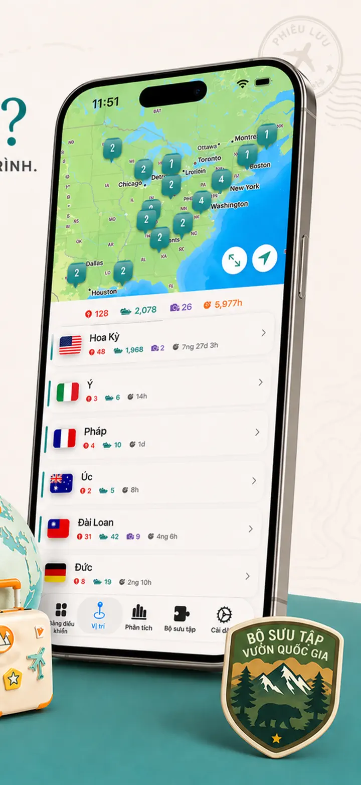
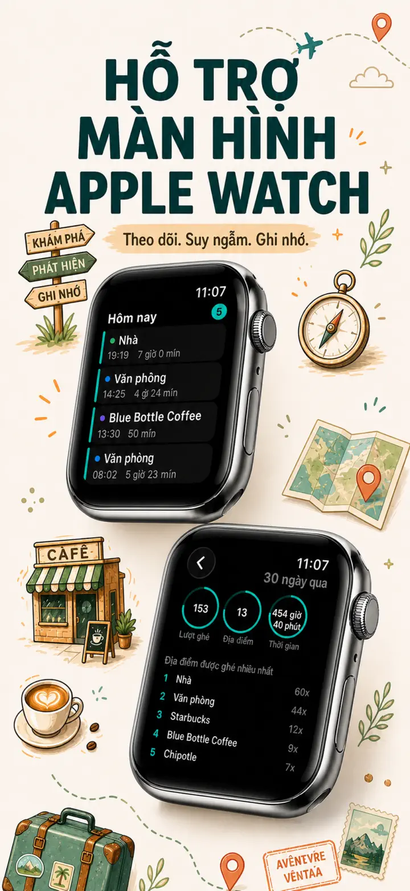
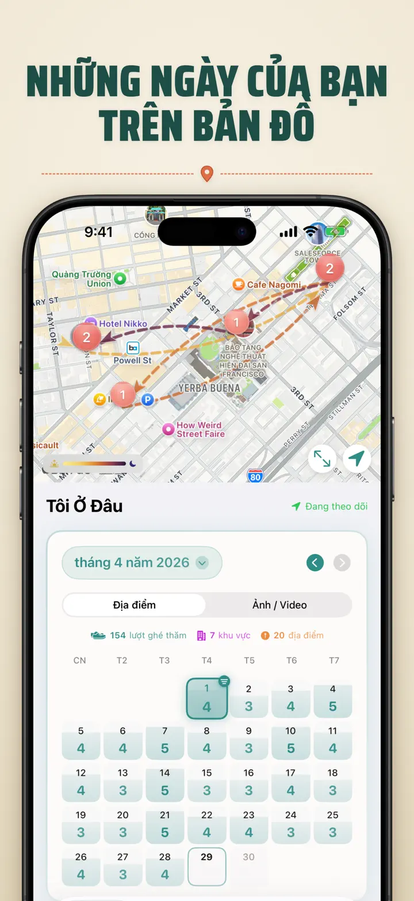
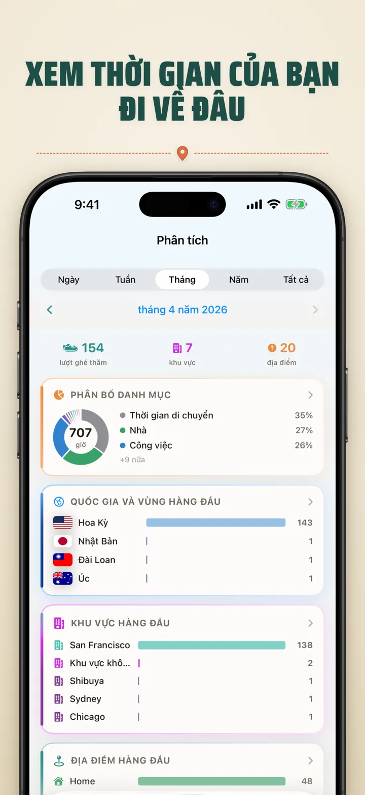
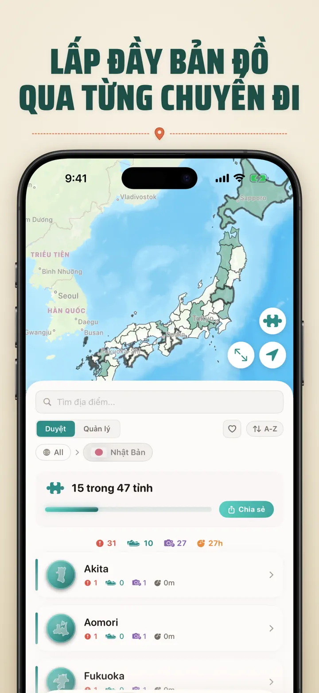
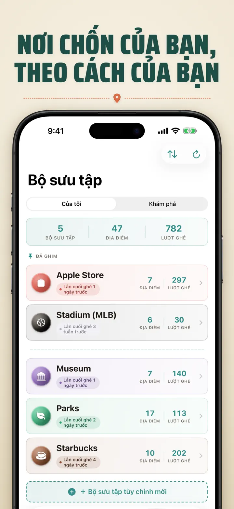
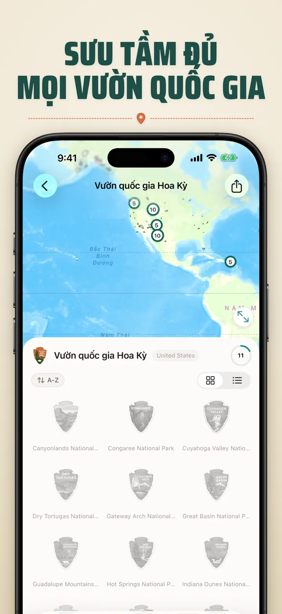
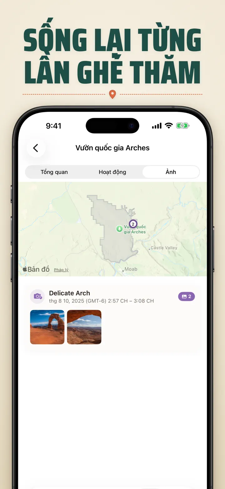

Tôi Ở Đâu?
Ghi lại địa điểm & ảnh của bạn
Mới: 103 đền Ichinomiya của Nhật Bản, mỗi đền một huy hiệu chạm khắc. Tự động theo dõi chuyến thăm và dòng thời gian riêng tư, tất cả trên thiết bị của bạn.
Tải xuống từ App StoreGiới thiệu ứng dụng
Where was I ? — Nhật Ký Địa Điểm Cá Nhân
Bạn từng cố nhớ nhà hàng tuyệt vời tháng trước? Where was I ? tự động theo dõi các chuyến thăm và xây dựng dòng thời gian đẹp mắt về hành trình cuộc sống của bạn.
THEO DÕI TỰ ĐỘNG
Không cần ghi chép thủ công. Ứng dụng âm thầm ghi lại khi bạn đến và rời đi, tạo lịch sử chi tiết mà không cần bạn làm gì.
LỊCH THÔNG MINH
Xem các chuyến thăm theo ngày, tuần hoặc tháng. Lịch trực quan hiển thị số lần ghé thăm và các địa điểm độc đáo. Chạm vào một ngày để xem bạn đã ở đâu.
WIDGET MÀN HÌNH CHÍNH & MÀN HÌNH KHÓA
Xem các chuyến thăm gần đây nhất với widget Màn hình chính cỡ vừa. Widget Màn hình khóa hiển thị vị trí hiện tại, bộ đếm thời gian lưu lại trực tiếp, hoặc số lần ghé thăm hôm nay — tất cả đều có thể chạm.
SẮP XẾP ĐỊA ĐIỂM
Địa điểm được tự động nhóm theo vùng và thành phố. Gán danh mục tùy chỉnh như Nhà, Công ty, Phòng gym hoặc Quán cà phê. Tạo danh mục riêng với biểu tượng và màu sắc.
PHÂN TÍCH MẠNH MẼ
Khám phá các thói quen trong cuộc sống:
- Phân bổ thời gian theo danh mục
- Những nơi bạn đến nhiều nhất
- Phân tích nhịp độ hàng tuần
- Xu hướng tần suất ghé thăm
- Biểu đồ thời gian lưu lại từng địa điểm — xem bạn thường lưu lại bao lâu, theo ngày, tuần, tháng hoặc năm
BỘ SƯU TẬP VÙNG THEO QUỐC GIA
Biến hành trình thành trò ghép hình! Xem bạn đã đến bao nhiêu bang, tỉnh hoặc vùng trong mỗi quốc gia. Chia sẻ tiến trình dưới dạng hình ghép hình.
TIẾN TRÌNH VƯỜN QUỐC GIA
Khám phá thiên nhiên! Tự động ghi nhận các chuyến thăm vườn quốc gia và theo dõi tiến trình cùng các địa điểm hàng ngày của bạn.
100 LÂU ĐÀI NỔI TIẾNG NHẬT BẢN
Đang du lịch Nhật Bản? Bộ sưu tập tích hợp mới theo dõi các chuyến thăm đến 100 lâu đài nổi tiếng của đất nước này. Mở tab Bộ Sưu Tập → Khám Phá → Nhật Bản.
BỘ SƯU TẬP TÙY CHỈNH
Theo dõi bất cứ điều gì bạn muốn — Apple Stores, bảo tàng, hiệu sách. Tạo bộ sưu tập, đặt từ khóa và xem nó tự động đầy lên. Mỗi bộ sưu tập hiển thị số lượng, lịch sử ghé thăm đầy đủ và bản đồ.
NHẬP LỊCH SỬ VỊ TRÍ CỦA BẠN
Đến từ một ứng dụng khác? Mang theo toàn bộ lịch sử của bạn — định dạng được phát hiện tự động, tệp xuất lớn được xử lý, và bạn sẽ thấy bản xem trước trước khi nhập bất cứ gì:
- Google Timeline (tệp xuất Google Maps hoặc Google Takeout)
- Arc Timeline (các tệp .json hàng tháng bạn xuất từ Arc)
- Moves (bản sao lưu ProtoGeo / Facebook Moves)
QUẢN LÝ HÀNG LOẠT
Quản lý tất cả địa điểm tại một nơi. Tìm kiếm, sắp xếp và lọc. Chọn nhiều địa điểm để phân loại hoặc xóa hàng loạt. Giữ thư viện địa điểm gọn gàng.
QUYỀN RIÊNG TƯ LÀ TRÊN HẾT
Dữ liệu vị trí của bạn ở lại trên thiết bị. Không cần tài khoản. Không có dữ liệu nào gửi đến máy chủ. Sự di chuyển của bạn là việc riêng của bạn.
PHÙ HỢP CHO:
- Theo dõi giờ làm và địa điểm
- Nhớ nhà hàng và cửa hàng đã ghé
- Phân tích thói quen hàng ngày
- Nhật ký du lịch và vườn quốc gia
- Báo cáo chi phí và quãng đường
- Hiểu cách phân bổ thời gian
TÍNH NĂNG:
- Tự động phát hiện đến và đi
- Lịch với dòng thời gian ghé thăm hàng ngày
- Widget Màn hình chính và Màn hình khóa với deep-linking
- Nhóm địa điểm theo vùng và thành phố
- Danh mục tùy chỉnh với biểu tượng và màu
- Gợi ý danh mục thông minh từ Apple Maps
- Lịch sử ghé thăm chi tiết với thời lượng
- Biểu đồ thời gian lưu lại từng địa điểm (ngày / tuần / tháng / năm)
- Bảng phân tích với thông tin chi tiết
- Tìm kiếm và lọc địa điểm
- Bộ sưu tập vùng theo quốc gia với hình ghép hình chia sẻ được
- Theo dõi tiến trình vườn quốc gia
- Bộ sưu tập tích hợp 100 Lâu đài nổi tiếng Nhật Bản
- Bộ sưu tập tùy chỉnh với tự khớp từ khóa, chỉnh tay và thống kê
- Quản lý địa điểm hàng loạt
- Nhập từ Google Timeline, Arc Timeline và Moves
- Khả năng xuất dữ liệu
- Không cần tài khoản
- Thiết kế tập trung vào quyền riêng tư
Bắt đầu xây dựng ký ức địa điểm hôm nay. Tải Where was I ? và không bao giờ quên nơi bạn đã đến.
Privacy Policy: https://masawata.net/privacy-policy.html Terms Of Service: https://www.apple.com/legal/internet-services/itunes/dev/stdeula/
Ảnh chụp màn hình








Tôi Ở Đâu?
Mới: 103 đền Ichinomiya của Nhật Bản, mỗi đền một huy hiệu chạm khắc. Tự động theo dõi chuyến thăm và dòng thời gian riêng tư, tất cả trên thiết bị của bạn.
Tải xuống từ App Store